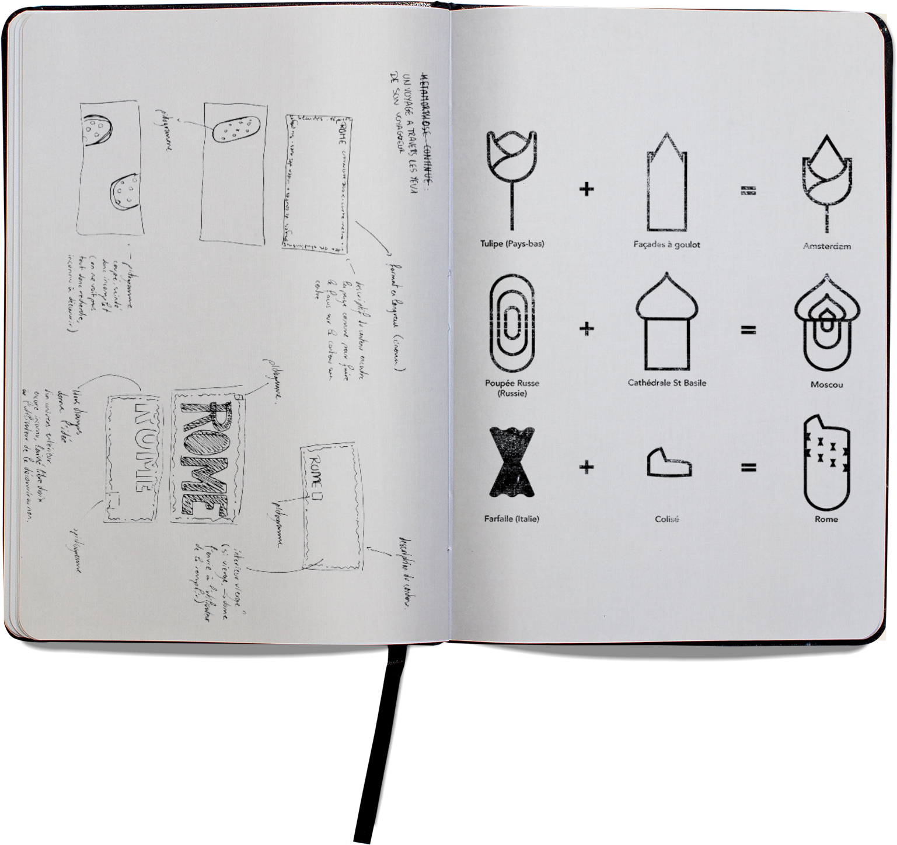

MOLESKINE.
Identité Visuelle - City Notebook
de Moleskine
Conception d’une identité visuelle pour les bandeaux de la collection de carnets "City Notebook" proposée par Moleskine.
La collection s'offre comme étant un support pour l'organisation de voyages, visites...
Conception
Pour ammener l'idée d’un voyage personnalisable tout en conservant l’image élégante et fonctionnelle de Moleskine, tout les bandeaux sont habillés d'une photographie en arrière-plan réprésentant l'architecture très rythmée et géométrique des villes,
texte invisible
cadrée d'une façon très personnelle qui reflète le regard particulier de l'utilisateur. Le texte renforce cet esprit tout en faisant référence aux magnétoscope portable.


Les pictogrammes:
